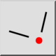
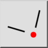
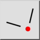
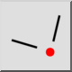

Intersezione manuale
Barra degli strumenti / Icona:
 

Menù: Scatto > Intersezione manuale
Scorciatoia: S, Y
Comandi: snapintersectionmanual | sy
Questa è una traduzione automatica.
Barra degli strumenti / Icona:
 

Menù: Scatto > Intersezione manuale
Scorciatoia: S, Y
Comandi: snapintersectionmanual | sy
A volte la modalità snap intersezione non può essere usata per agganciare un punto di intersezione perché il punto di intersezione si trova al di fuori di una o di entrambe le entità. Questo strumento di scatto consente di specificare esplicitamente due entità che si intersecano e di agganciarsi al loro punto di intersezione.